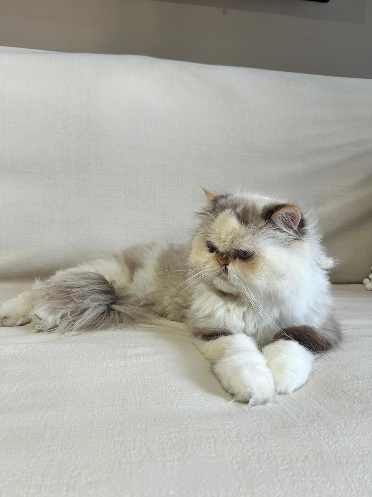
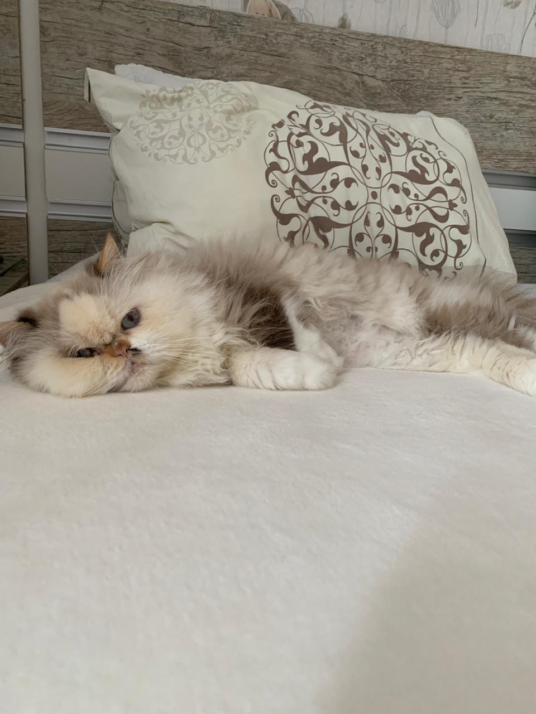

Sobre Lola
Eu sou a Lola, uma gata muito fofa — modéstia à parte. Adoro quando me fazem carinho, especialmente na cabeça e atrás das orelhas; é aí que começo a ronronar sem perceber. Mas já aviso: colo não é comigo. Gosto de ficar perto, acompanhando tudo do meu jeitinho, sempre no meu espaço. Sou carinhosa, independente e sei exatamente quando quero atenção. Amo minha família, só prefiro demonstrar isso com sutileza… afinal, sou uma gata, né?